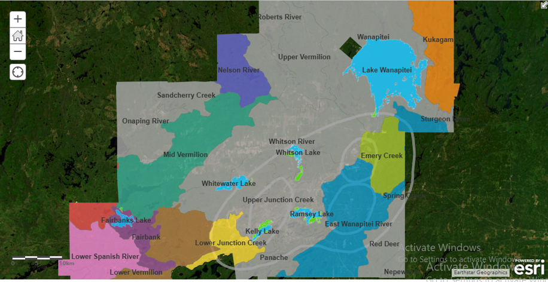
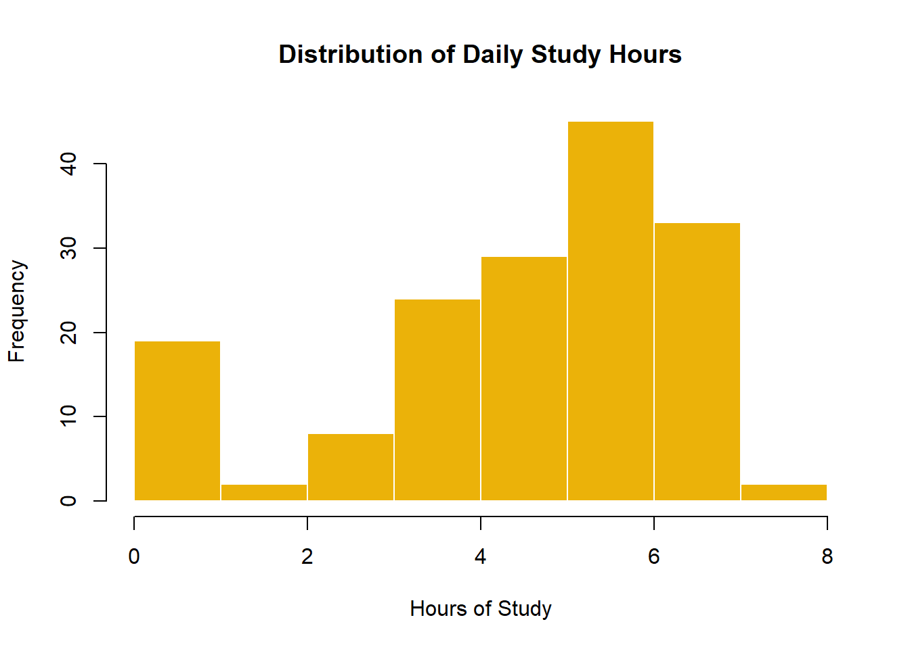

In this project, we performed lake water sampling for spring phosphorus on six lakes within the City of Greater Sudbury. We also received data from the City’s land reclamation program’s tree planting sites which we used to perform a tree health site assessment. Using ArcGIS Online, we created a Web Map and a Story Map to showcase the lake water sampling sites and the tree planting health sites assessment.


Information is derived from the International Energy Agency's Global EV Outlook 2024. This dashboard provides an overview of the global electric vehicle (EV) market and highlights the factors inhibiting EV adoption worldwide.
It effectively communicates the growth and challenges in the EV market through visuals and concise data.

This dashboard delved into an insightful analysis of crime trends across Canada, using historical data to uncover patterns and support data-driven decisions for improving safety and resource allocation. This dashboard provides a concise and clear summary of key metrics such as crime rates, severity indices, and trends by province and year.

The dashboard provides a comprehensive overview of crude oil and lease condensate proved reserves, changes, production, and sales in the year 2015. It effectively summarizes the state-level performance and trends in the U.S. crude oil sector for 2015.

For this analysis, I collected data on my daily activities. The goal of the study was to use the personalized data collected to answer the questions regarding what do I did daily; whether I spend my days the way I expected; and if there was any difference in how I spent your time during the spring semester compared to fall semester.

The aim of this project was to create and share an evacuation map of Houston, Texas to prepare for an incoming hurricane.

This project was to demonstrate data cleaning and analysis proficiency, building a portfolio showcasing those skills to potential employers and relevant stakeholders. Through this project, we gained understanding of factors influencing movie revenues and create visually compelling dashboards that communicate insights effectively..